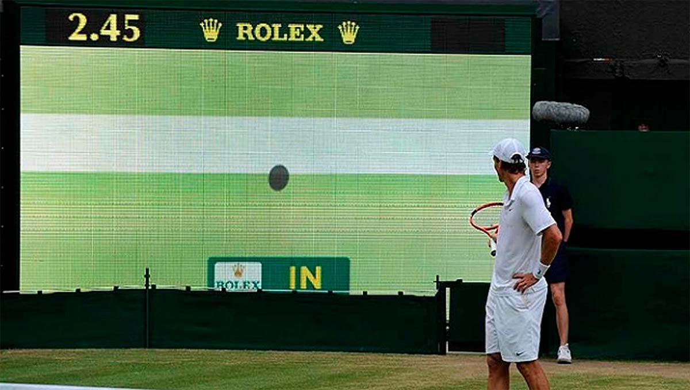

La introducción de los sistemas de video en el deporte ha tenido un
impacto profundo en la forma en que se evalúan los rendimientos.
En deportes como el fútbol, baloncesto o el tenis, los sistemas
de análisis por video permiten a los entrenadores y analistas descomponer
cada jugada, identificar patrones y optimizar estrategias.
El mundo del deporte ha experimentado una revolución tecnológica en los
últimos años gracias a la integración de sistemas de video y sensores avanzados.
Estos desarrollos han transformado tanto el entrenamiento de los deportistas como
la experiencia de los aficionados. En este artículo, exploramos cómo los videos y sensores se han convertido en herramientas fundamentales para mejorar el rendimiento y el análisis en diversas disciplinas deportivas.
Una de las mayores innovaciones es el análisis en tiempo real. Con cámaras de alta resolución colocadas estratégicamente en estadios o centros de entrenamiento, es posible capturar cada detalle de un juego o una práctica. Programas de inteligencia artificial (IA) pueden analizar estos videos en segundos, proporcionando información crucial sobre la posición de los jugadores, la velocidad y la eficacia de sus movimientos.
LLos aficionados al deporte también se han beneficiado enormemente de los avances en la
tecnología de video. Actualmente, los fanáticos pueden disfrutar de nuevas formas de
ver los partidos, accediendo a múltiples ángulos de cámara, repeticiones instantáneas y
análisis de jugadas en tiempo real desde sus dispositivos móviles o televisores. Además,
algunas plataformas deportivas ofrecen videos en 360 grados o realidad aumentada (AR),
permitiendo a los usuarios experimentar el deporte desde una perspectiva mucho más inmersiva.
Un ejemplo de esto es la plataforma Second Spectrum, que se utiliza en la NBA. Esta aplicación
permite a los aficionados ver las estadísticas avanzadas de los jugadores, comparar sus movimientos
y analizar jugadas con gráficos interactivos mientras el partido está en curso
Una de las principales ventajas del uso de video en deportes de equipo es la capacidad para analizar el posicionamiento de los jugadores en el campo. Esta información es crucial en deportes como el fútbol o el baloncesto, donde la colocación táctica puede determinar el éxito de una jugada o incluso de todo un partido. Con la ayuda de sistemas avanzados de seguimiento de jugadores como los utilizados en el fútbol profesional (por ejemplo, el sistema de cámaras de Opta Sports o TRACAB), se puede analizar la distancia recorrida por cada jugador, su velocidad y su interacción con otros compañeros de equipo.
Los entrenadores pueden utilizar este análisis para identificar patrones de movimiento, tanto en su propio equipo como en el equipo rival, y hacer ajustes en la táctica de forma mucho más informada.
Los sensores han abierto una nueva dimensión en el monitoreo y la optimización del rendimiento deportivo. Estos dispositivos, que suelen integrarse en la ropa o el equipo deportivo, miden desde la frecuencia cardíaca, aceleración, hasta la tensión muscular, proporcionando datos en tiempo real a los atletas y entrenadores.
Los sensores de movimiento, como los que encontramos en dispositivos como Catapult o STATSports, permiten medir la velocidad, aceleración y la carga física de los deportistas. Esto es esencial para evitar lesiones, ya que permite a los entrenadores ajustar la intensidad del entrenamiento según las métricas recogidas.
Por otro lado, sensores como los utilizados por Whoop o Oura monitorizan el descanso, el sueño y los niveles de estrés de los atletas. Con estos datos, los entrenadores pueden personalizar los regímenes de recuperación y asegurarse de que los atletas alcancen su máximo potencial sin comprometer su salud.
Muchas de estas tecnologías se combinan en aplicaciones móviles que hacen posible el seguimiento y análisis detallado del rendimiento deportivo. Desde apps que ayudan a los aficionados a seguir sus estadísticas personales hasta soluciones para profesionales que requieren una gestión avanzada de datos, el impacto es significativo.
1. Hudl: Utilizada en deportes como fútbol y baloncesto, Hudl permite a los entrenadores analizar videos y compartir análisis detallados con sus jugadores.
2. Coach’s Eye: Esta aplicación es famosa por permitir la evaluación precisa de la técnica a través de la grabación en cámara lenta y la comparación de movimientos.
3. Strava: Si bien está más orientada al ciclismo y el running, Strava combina sensores de GPS y datos biométricos para proporcionar a los usuarios una vista integral de su rendimiento.
El uso de videos y sensores no solo ha mejorado la capacidad de análisis, sino que también ha permitido a los atletas afinar detalles específicos
en su técnica que antes eran difíciles de observar. Con el uso de cámaras de alta velocidad y sensores que miden cada milisegundo de movimiento,
los entrenadores y atletas ahora pueden corregir errores en tiempo real.
Por ejemplo, en el tenis, los sensores en las raquetas permiten evaluar la potencia y precisión de cada golpe, ayudando a los jugadores a ajustar
su técnica para lograr un mejor rendimiento. En el fútbol, las cámaras de seguimiento en el campo permiten a los entrenadores identificar los movimientos
sin balón de los jugadores y optimizar su colocación táctica.
El análisis detallado permite que los entrenadores no solo identifiquen los errores, sino que proporcionen feedback visual inmediato, lo que facilita al atleta entender cómo ajustar su técnica. Este enfoque basado en datos también minimiza el margen de error humano en la evaluación del rendimiento.
Aunque los sistemas de video y sensores han demostrado ser herramientas poderosas, su integración aún enfrenta desafíos. El costo de la tecnología avanzada puede ser una barrera para muchas instituciones deportivas más pequeñas, y la recopilación de grandes cantidades de datos plantea preguntas sobre la privacidad y el uso ético de la información. Sin embargo, con el continuo desarrollo de la inteligencia artificial y el machine learning, es probable que veamos una mayor accesibilidad y eficiencia en estas tecnologías.
El futuro de las aplicaciones deportivas y la tecnología de sensores parece estar encaminado hacia una mayor personalización y accesibilidad. Las tecnologías portátiles más ligeras y la realidad aumentada (AR) podrían permitir a los atletas experimentar entrenamientos más inmersivos y personalizados.
El árbitro recibió una alerta de que los sensores del balón habían detectado que fue tocado ilegalmente por Openda, por lo que el gol finalmente fue anulado. La televisión mostró un pequeño gráfico que indicaba la vibración del balón al ser tocado por la mano.
La tecnología usable en los deportes es la capacidad para mejorar el rendimiento del atleta. Al recopilar y analizar datos en tiempo real, los entrenadores y atletas pueden tomar decisiones informadas para mejorar los regímenes de entrenamiento, optimizar el rendimiento y reducir los riesgos de lesiones. Esta tecnología se está volviendo indispensable para cualquiera que busque obtener una ventaja competitiva en el mundo del deporte.
La pandemia ha acelerado la digitalización del deporte. En 2020, más de 830 millones de personas en todo el mundo usaron wearables o aplicaciones de fitness, de acuerdo a un estudio realizado por SIGNA Sports United y Boston Consulting Group. Actualmente, el tamaño del mercado mundial del deporte alcanza 1,1 billones de dólares.
- "The Science and Application of High-Intensity Interval Training" de Paul Laursen y Martin Buchheit: https://martin-buchheit.net/2018/01/21/science-and-application-of-high-intensity-interval-training-the-book/
- "Sport 2.0: Transforming Sports for a Digital World: https://books.google.com.co/books?id=9n81DgAAQBAJ&printsec=copyright&redir_esc=y#v=onepage&q&f=false"
- Opta Sports y TRACAB: https://optaplayerstats.statsperform.com/en_GB/soccer | https://tracab.com/
- FIFA.com